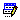

Administración de Pictogramas¶
Ubicación¶
| Módulo: | Real Q |
|---|---|
| Grupo: | Soluciones |
| Descripción: | Administración de Pictogramas |
Introducción¶
Un pictograma es un símbolo no lingüistico que representa un objeto o concepto.
En este caso, los Pictogramas son características de los Reactivos que deben ser tomadas en cuenta para su manejo. En esta interfaz puede crearlos, modificarlos o eliminarlos.
Los pictogramas son agregados a un Reactivo en Crear un Reactivo
Crear un Pictograma¶
- Ejecute la opción Administración de Pictogramas
- En la parte inferior de la ventana haga click en
Nuevo
- En la ventana emergente digite un nombre
- Haga click en Guardar
Modificar un Pictograma¶
- Ejecute la opción Administración de Pictogramas
- Haga click en un Pictograma de la grilla
- En la parte inferior de la ventana haga click en  Modificar
- Modifique el nombre del Pictograma
- Haga click en Guardar
Eliminar un Pictograma¶
- Ejecute la opción Administración de Pictogramas
- Haga click en un Pictograma de la grilla
- En la parte inferior de la ventana haga click en Eliminar
- En la ventana de confirmación pulse ‘Sí’